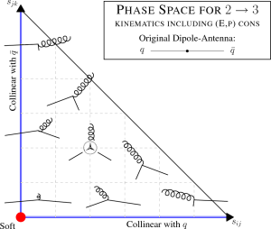

The cornerstone of VINCIA is a pT-ordered model for QCD + QED/EW
showers based on the antenna formalism. Originally developed as a
standalone plugin, it has been incorporated into the Pythia 8 source
code since Pythia version 8.300.
The main features are:
QCD: VINCIA's QCD antenna functions incorporate both the
collinear (DGLAP) and soft (eikonal) limits of QCD matrix elements at
leading colour. They hence should exhibit improved colour-coherence
effects relative to Pythia's original (DGLAP-based) simple shower
model.
QED:
VINCIA's default QED antenna-shower module is based on a fully coherent
(multipole) treatment of photon radiation, which is
interleaved with the QCD evolution.
Photon splittings to lepton-antilepton and quark-antiquark pairs are
also included.
EW: Optionally, the coherent QED shower can be replaced by a
full-fledged electroweak (EW) shower module, which allows for
branchings involving Z/W/h bosons as well, with antenna functions
capturing the collinear limits of the relevant matrix elements,
including ones involving gauge-boson self couplings. This can be used
to include weak corrections in electroweak Sudakov factors and to
resum multiple weak-boson emissions (and splittings). Note that
the module operates on helicity states, and helicity dependence must
therefore be enabled. Note also that, since
this module is based on collinear approximations, it does not exhibit
the full coherence of the pure-QED shower module.
Mass Effects: In all cases, the effects of final-state parton
masses (e.g., bottom and top quark masses) are systematically
included, and the massive antenna functions have the appropriate
quasi-collinear limits.
Interleaved Resonance Decays: By default, resonance decays are
interleaved with the rest of the perturbative evolution. This means
that each resonance in the hard process (or emitted by the EW shower)
is treated as stable until the evolution reaches a pT scale of order
the offshellness of that resonance, at which point the resonance is
replaced by its decay products and an internal "resonance shower" is
performed in the decay system, starting from the invariant mass of the
decaying resonance and ending at the offshellness scale. The
decay+shower system is then merged back into the upstream system and
the evolution of the event continues, starting from the offshellness
scale. In case of sequential resonance decays, this procedure may be
carried out either iteratively or in sequence, depending on the
offshellnesses involved.
Interleaved Evolution and MPI: VINCIA's shower evolution is
ordered in a measure of transverse momentum and is fully interleaved
with Pythia's treatment of multiple parton interactions (MPI). When
the Vincia shower model is selected, both the hard interaction and any
MPI are showered by Vincia.
The name VINCIA stands for "VIrtual Numerical Collider with
Interleaved Antennae". This reflects its main properties as a
numerical model for collider-physics processes based on
dipole-antennae and interleaved perturbative evolution. It is also
intended to allude to a progression from PYTHIA, a name originating
in ancient Greece, to the renaissance era of Leonardo da Vinci. The
logo of VINCIA is the "Vitruvian Man", by da Vinci, a choice which
also reflects the combination of art and accuracy which is necessary
to write a good event generator. Classical antiquity is still
indirectly represented, via the namesake of the logo, Vitruvius, a
first-century (BC) Roman author, architect, and engineer.
Matching and Merging with VINCIA
VINCIA has its own dedicated approach to merging with
higher-multiplicity tree-level matrix elements, called sector merging or MESS
(for Matrix Elements + Sector Showers).
It is similar in spirit to the CKKW(-L) approaches, but exploits the
maximally-bijective nature of VINCIA's sector shower to vastly reduce
the complexity of the merging procedure, so that merging especially
at high multiplicities becomes more efficient.
Settings for VINCIA's merging are described
here.
VINCIA also provides dedicated hooks for vetoed showers in POWHEG NLO matching
with input from the POWHEG-BOX program, attempting to correct for the mismatch
between the ordering variables in POWHEG-BOX and VINCIA. They are contained in
include/Pythia8Plugins/PowhegHooksVincia.h. The usage is the same
as for Pythia's PowhegHooks and described
here.
To use VINCIA with POWHEG-BOX input an existing main program
(e.g. main31.cc) that uses
POWHEG-BOX+Pythia can be adapted by replacing every occurence of
PowhegHooks with PowhegHooksVincia.
Main Shower Switches
mode Vincia:nFlavZeroMass
(default = 4; minimum = 2; maximum = 6)
Controls the number of flavours that will be treated as massless by
VINCIA, ie with massless kinematics and no mass corrections. The
remaining flavours will be bookkept with massive kinematics and
mass-corrected antenna functions. Note that, even for flavours
treated as massless, an elementary phase-space check is still made eg
on all g→QQ branchings to ensure m(QQ) >= 2mQ. Likewise, all
heavy flavours in the initial state are forced to undergo a conversion
into a gluon when the evolution variable reaches their mass threshold
(with the threshold determined by the maximum of the PDF threshold and
the relevant user-specifiable mass parameter given below).
flag Vincia:helicityShower
(default = off)
Switch to use helicity-dependent antenna functions (or not). Only
meaningful when helicity information is present in the Born-level
events.
flag Vincia:sectorShower
(default = on)
Switch to (de-)activate the sector shower in VINCIA. In this
version of VINCIA, the sector shower has become the default,
due to its better scaling behaviour in multileg matching and merging,
see below.
parm Vincia:sectorDamp
(default = 1.0; minimum = 0.0; maximum = 1.0)
In the symmetrisation over post-branching gluons that is done to
derive the sector antenna functions from the global ones, the
branching invariant with swapped gluons is nominally given by
yijSym = yik = 1 - yij - yjk. If the swapped gluons are j and
k (and straightforwardly generalised if they are i and j) then the
collinear yjk→0 limit does not change by adding or
subtracting a term of order yjk. Therefore one could equally well use
yijSym = 1 - yij (or something inbetween). This is still
guaranteed to be positive definite and was indeed the choice in the
original sector antenna shower papers. Since the latter definition
produces a value for yijSym which is slightly larger than the
former, the corresponding 1/yijSym singularities in the antenna
function are damped slightly, so that larger values of the
sectorDamp parameter produces sector antenna functions
which have slightly smaller magnitudes outside the collinear
limits. Strictly speaking this choice is an ambiguity that should be
varied for uncertainty estimates, in which context we note that we
expect it to be almost entirely degenerate with variations of
nonsingular terms.
Shower Starting Scales
Similarly to PYTHIA, for processes that include at least one quark,
gluon, or photon in the final state, the default choice in VINCIA is
to start the shower from the factorisation scale used for the hard
process (as given by PYTHIA for internal processes, or defined by the
scale value for Les Houches input),while processes that
do not include any such partons are allowed to populate the full phase
space. This behaviour can be changed by the following option, which is
anologous to the SpaceShower:PTmaxMatch option in PYTHIA.
mode Vincia:pTmaxMatch
(default = 0; minimum = 0; maximum = 2)
option 0 : Showers off processes that include at least one
final-state quark, gluon, or photon, are started at the factorisation
scale, while processes that do not include any such partons are
started at the phase-space maximum.
option 1 : Showers are always started at the factorisation
scale.
option 2 : Showers are always started at the phase-space
maximum. This option is not recommended for physics runs as it will
lead to unphysical double counting in many cases.
When the first branching is limited by the factorisation scale for the
hard process, a multiplicative factor can be applied to either
increase or decrease the shower starting scale relative to the
factorisation scale:
parm Vincia:pTmaxFudge
(default = 1.0; minimum = 0.1; maximum = 10.0) parm Vincia:pTmaxFudgeMPI
(default = 1.0; minimum = 0.1; maximum = 10.0)
Same as above but for MPI systems, affecting the underlying event.
Note that for any (combination of) choices that result in ISR showers
not using the factorisation scale as the starting scale, the generated
Sudakov factor will effectively produce leftover PDF ratios in the
exclusive cross sections produced by the shower.
Kinematics and Recoils
While the CM momenta of a 2→3 branching are fixed by
the generated invariants (and hence by the antenna function), the
global orientation of the produced 3-parton system with respect to the rest of
the event (or, equivalently, with respect to the original
dipole-antenna axis) suffers from an ambiguity outside the LL limits,
which can be significant in regions where the leading logs are
suppressed or absent.
To illustrate this ambiguity, consider the emissision of a gluon from
a qqbar antenna with some finite amount of transverse momentum
(meaning transverse to the original dipole-antenna axis, in the CM of the
dipole-antenna). The transverse momenta of the qqbar pair after the
branching must now add up to an equal, opposite amount, so that total
momentum is conserved, i.e., the emission generates a recoil. By an
overall rotation of the post-branching 3-parton system, it is possible
to align either the q or the qbar with the original axis, such that it
becomes the other one that absorbs the entire recoil (the default in
showers based on 1→2 branchings such as old-fashioned parton
showers and Catani-Seymour showers), or to align
both of them slightly off-axis, so that they share the recoil (the
default in VINCIA, see illustration below).

Kinematics and Recoils for II Antennae
The post-branching momenta are fixed by the following requirements:
1) The direction of the initial state partons is aligned with the beam axis
(z-axis).
2) The invariant mass and the rapidity of the final state recoiler are not
changed by the branching. This allows a direct construction of the
post-branching momenta in the lab frame.
Kinematics and Recoils for IF Antennae
For IF branchings, Vincia contains implementations of two different
kinematics maps, called "local" and "global" in what follows.
In the
"local map", the initial-state parton recoils
longitudinally, and there is no recoil imparted to any partons
that do not participate directly in the branching. (I.e.,
recoil effects are absorbed locally within the branching antenna, and
no partons outside of it are affected.) This is equivalent to saying
that any transverse momentum associated with the emitted parton (j) is
absorbed by the other final-state parton (k). This
allows a simple construction of the post-branching momenta in the
centre-of-mass frame of the initial-final antenna.
The "global map" allows for an overall transverse recoil associated with the
initial-state leg to be imparted to the system of final-state partons
other than those participating directly in the branchings. This is
equivalent to saying that any transverse momentum associated with the
emitted parton (j) is absorbed by the initial-stage leg (a), after
which a Lorentz transformation brings it (plus the final-state system)
back to having beam-collinear kinematics. The recoil vanishes For
final-state collinear kinematicsbut is in general nonzero outside that
limit.
Intuitively, the local map should be appropriate for final-state
splittings, while the global one would be appropriate for initial-state
ones. The full story is more complicated, partly since soft wide-angle
radiation intrinsically represents interference between the two cases,
and partly because the phase-space limits for the two maps (outside of
the strict soft and collinear limits) are different. (The x < 1
constraint translates to slightly different constraints on the
branching invariants for the two maps, as does positivity of the Gram
determinant.) A probabilistic selection is therefore made between
the local and
global maps, using a form obtained by R. Verheyen based on comparisons
to DIS matrix elements, P(global) = (sAK - saj)^2/[ (sAK + sjk)^2 +
(sAK - saj)^2 ] * Theta( sAK - saj ), with Theta the unit step
function (since the momenta in the global map always become unphysical
for saj > sAK).
mode Vincia:kineMapIF
(default = 1; minimum = 1; maximum = 3)
option 1 : Local recoil map.
option 2 : Gluon emissions use a probabilistic selection
between the global and local maps. Antennae that only contain
initial-state singularities always use the global one. Antennae that
only contain final-state singularities always use the local one.
option 3 : Probabilistic selection between the global and
and local maps, for all IF branchings irrespective of their
singularity structure.
When using the probabilistic selection, it is possible (in
phase-space regions well away from the strict soft and collinear
limits) that the selected kinematics map produces unphysical momenta
(with x > 1 or negative energies) for the given branching
invariants, while the other map would give physical momenta. In such
cases, one has to choose whether the given phase-space point should be
vetoed, or whether the other map should be allowed to be used instead
to construct the kinematics.
flag Vincia:kineMapIFretry
(default = off)
option off : If the map selected according to the probabilistic
choice above returns unphysical momenta, the trial branching is
vetoed.
option on : If the map selected according to the probabilistic
choice above returns unphysical momenta, the other map is tried. Only
if both maps fail to produce physical momenta is the trial branching
vetoed.
Kinematics and Recoils for FF Antennae
mode Vincia:kineMapFFemit
(default = 3; minimum = 1; maximum = 3)
Selects which method to use for choosing the Euler angle for the
global orientation of the post-branching kinematics construction for
gluon emissions.
option 1 : The ARIADNE angle (see illustration).
The recoiling mothers share the recoil in
proportion to their energy fractions in the CM of the
dipole-antenna. Tree-level expansions of the VINCIA shower compared
to tree-level matrix elements through third order in alphaS have
shown this strategy to give the best overall approximation,
followed closely by the KOSOWER map below.
option 2 : LONGITUDINAL. The parton which has the smallest
invariant mass together with the radiated parton is taken to be the
"radiator". The remaining parton is taken to be the "recoiler". The
recoiler remains oriented along the dipole axis in the branching rest
frame and recoils longitudinally against the radiator + radiated
partons which have equal and opposite transverse momenta (transverse
to the original dipole-antenna axis in the dipole-antenna
CM). Comparisons to higher-order QCD matrix elements show this to be
by far the worst option of the ones so far implemented, hence it could
be useful as an extreme case for uncertainty estimates, but should
probably not be considered for central tunes. (Note: exploratory
attempts at improving the behaviour of this map, e.g., by selecting
probabilistically between the radiator and the recoiler according to
approximate collinear splitting kernels, only resulted in marginal
improvements. Since such variations would introduce additional
complications in the VINCIA matching formalism, they have not been
retained in the distributed version.)
option 3 : The KOSOWER map. Comparisons to higher-order QCD
matrix elements show only very small differences between this and
the ARIADNE map above, but since the KOSOWER map is sometimes used in
fixed-order contexts, we deem it interesting to include it as a
complementary possibility. (Note: the KOSOWER maps in fact represent a
whole family of kinematics maps. For experts, the specific choice
made here corresponds to using r=sij/(sij+sjk) in the
definition of the map.)
mode Vincia:kineMapFFsplit
(default = 2; minimum = 0; maximum = 3)
Selects which method to use for choosing the Euler angle for the
global orientation of the post-branching kinematics construction for
gluon splittings.
option 1 : The ARIADNE angle (see illustration).
The recoiling mothers share the recoil in
proportion to their energy fractions in the CM of the
dipole-antenna. Tree-level expansions of the VINCIA shower compared
to tree-level matrix elements through third order in alphaS have
shown this strategy to give the best overall approximation,
followed closely by the KOSOWER map below.
option 2 : LONGITUDINAL. For gluon splittings, this choice
forces the recoiler to always recoil purely longitudinally (in the antenna
CM) regardless of the size of the branching invariants.
option 3 : The KOSOWER map. Comparisons to higher-order QCD
matrix elements show only very small differences between this and
the ARIADNE map above, but since the KOSOWER map is sometimes used in
fixed-order contexts, we deem it interesting to include it as a
complementary possibility. (Note: the KOSOWER maps in fact represent a
whole family of kinematics maps. For experts, the specific choice
made here corresponds to using r=sij/(sij+sjk) in the
definition of the map.)
Kinematics and Recoils for RF Antennae
mode Vincia:kineMapRFemit
(default = 1; minimum = 1; maximum = 2)
There is only one choice of kinematics map for resonance emissions.
However there is a freedom to choose the recoiler(s). option : However there is a freedom to choose the recoiler(s).